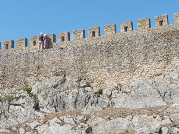

Ciudades interesenates
-
Diapositivas de Alcobaça

- Monasterio de Santa Maria de Alcobaça (siglo XII), clasificado como Patrimonio mundial por la UNESCO.
-
Diapositivas de Fátima
- Santuario de Nuestra Señora del Rosario de Fátima
-
Diapositivas de Nazaré

- La capital de las olas gigantes está en Portugal Las mayores olas surfeadas del mundo
-
Diapositivas de Obidos
 - Bonita ciudadela fortificada cerca de Nazaré
-
Diapositivas de Sintra

- Palacios y castillos